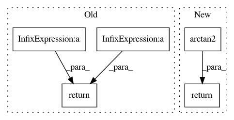

a15c8e19f9270ba69758528b0df2cfc362b601af,pyntcloud/geometry/coord_systems.py,,cylindrical_to_spherical,#Any#Any#Any#Any#Any#,172
Before Change
"phi". Polar angle.
radial_out = np.sqrt((radial * radial) + (height * height))
azimuthal = angular
if theta_is_inclination:
polar = np.arctan(radial / height)
else:
polar = np.arctan(height / radial)
// some weird arctan shit
need_fix_arctan = np.logical_and(np.logical_and(radial > 0, height < 0),
polar < 0)
polar[need_fix_arctan] = abs(polar[need_fix_arctan]) + (np.pi / 2)
if degrees:
polar = np.rad2deg(polar)
return radial_out, azimuthal, polar
After Change
if phi_is_inclination:
phi = np.arctan2(ro, zeta)
else:
phi = np.arctan2(zeta, ro)
if degrees:
phi = np.rad2deg(phi)
return r, theta, phi
def spherical_to_cylindrical(r, theta, phi, degrees=True, phi_is_inclination=False):
In pattern: SUPERPATTERN
Frequency: 3
Non-data size: 5
Instances
Project Name: daavoo/pyntcloud
Commit Name: a15c8e19f9270ba69758528b0df2cfc362b601af
Time: 2017-06-21
Author: daviddelaiglesiacastro@gmail.com
File Name: pyntcloud/geometry/coord_systems.py
Class Name:
Method Name: cylindrical_to_spherical
Project Name: bsmurphy/PyKrige
Commit Name: eb08d1ea38ef34b757b7a5b0736ce92e2a4b0fb0
Time: 2017-02-03
Author: malte.ziebarth@fmvkb.de
File Name: pykrige/core.py
Class Name:
Method Name: great_circle_distance
Project Name: ray-project/ray
Commit Name: ce96b03b07a4a4bdd851aa84493c616cd291aff2
Time: 2020-10-06
Author: sven@anyscale.io
File Name: rllib/examples/env/mbmpo_env.py
Class Name: HopperWrapper
Method Name: reward